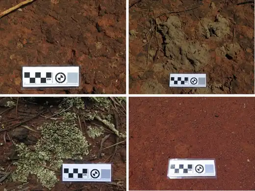
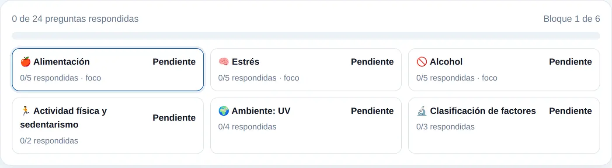

Tabla periódica reactiva
Imán y Escudo
en uso en clases
- Para
- Química, 8.º básico (CN08 OA14).
- Entrena
- Tendencias periódicas por posición, sin memorizar valores.
- Modos
- Comparación guiada, práctica con pistas y modo docente para proyectar.
Santiago, Chile
Soy Benjamín Moreira-Grez. Estudié los microbios del suelo y hoy trabajo con los datos de una flota de buses, en Andes, y enseño ciencias en un colegio. Uso agentes de IA a diario, en entornos controlados. Me interesa conversar sobre trabajo en datos, proyectos y colaboración en investigación.
Quién soy
Resuelvo problemas con lo que hay disponible.
Hasta hoy
Formación de base en biología, antes del doctorado en ecología microbiana de suelos.
La tesis preguntó si un suelo minero degradado se recupera al devolverle microorganismos, o sólo lo parece. Usé marcaje isotópico (RNA-SIP), metagenómica y estadística multivariante, con muestreos en terreno en zonas áridas de Western Australia.
Apliqué el mismo enfoque en arroceras, trigo y residuos de bauxita. La tesis y las publicaciones suman 796 citas según Google Scholar (octubre de 2026).
En Andes armé la telemetría y el detector de anomalías de una flota de buses, hoy en piloto. En el colegio enseño ciencias y hice herramientas web para practicar sin nota.
Fig. 1 — Demostración con datos simulados: refrigerante de dos buses, banda de referencia y alerta. El umbral se mueve en Data science.
Tres trabajosLos cuento igual: el problema, lo que hice y en qué quedó. Cada uno dice su estado:
Data science
Una flota de buses sin datos sobre el estado de sus vehículos y sin aviso de las fallas que venían.
El gráfico es una simulación: los datos de la flota son del cliente y no se publican. Un bus se queda en la banda de referencia; el otro deriva desde el día 13 y genera la alerta. Las cruces son falsas alarmas: avisar antes trae más.
Ecología
Saber si un suelo minero degradado se recupera al devolverle microorganismos, o sólo lo parece.
Con inóculo microbiano comercial y nitrógeno, tras 12 semanas en invernadero
El gráfico son datos publicados: amonio y nitrato más nitrito de un suelo de acopio de una mina del Pilbara, antes de incubar (Basal) y tras 12 semanas, por tratamiento (media ± DE, n = 3). Fuente: tabla suplementaria 1 de Moreira-Grez et al. 2019, Frontiers in Microbiology 10:1617 (CC BY 4.0).

Publicaciones en Google Scholar; también en ORCID y ResearchGate.
Docencia
Química, Biología y Ciencias para la Ciudadanía en cursos heterogéneos, con poco tiempo de sala.
La imagen es una captura de la Tabla periódica reactiva, que se abre y se usa desde el enlace. No hay gráfico de resultados: no publico datos de estudiantes.
Las imágenes son fragmentos de cada interfaz.
Imán y Escudo
en uso en clases

en uso en clases
publicada
en desarrollo
Un asistente con IA que cruza las fuentes que el colegio ya tiene y responde indicando la fuente. Local-first, con datos seudonimizados. Hoy es una demo con datos sintéticos; el piloto, con datos reales, desde 2027.
Escríbeme
Fondo: simulación de microorganismos del suelo junto a una raíz. No es una micrografía.